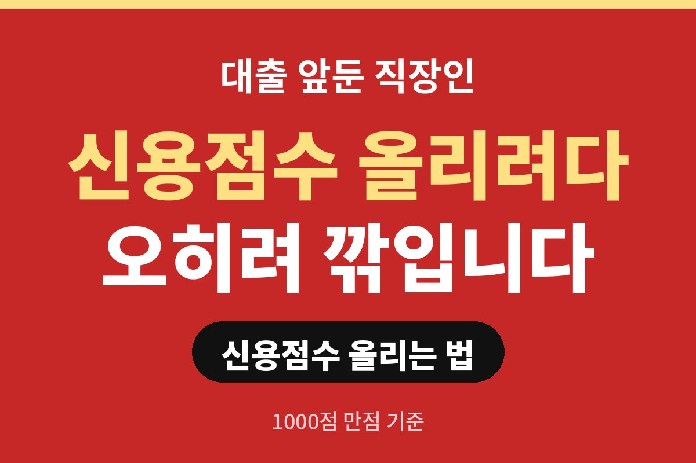
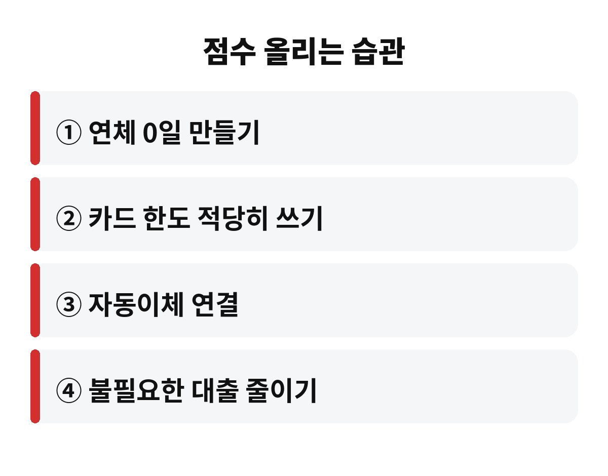
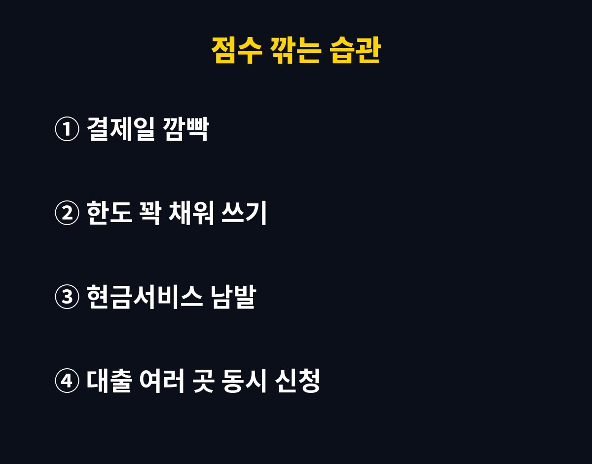

신용점수 올리는 법의 핵심은 의외로 단순해요. 1000점 만점에서 점수를 가장 크게 좌우하는 건 연체 여부이고, 그다음이 대출과 카드를 쓰는 습관입니다.
곧 전세대출이나 주택담보대출을 받을 직장인이라면 지금 점수를 한 번 확인해 보세요. 나는 열심히 쓰고 있다고 생각했는데 그 습관이 오히려 점수를 깎고 있다면, 어떻게 해야 할까요?
신용점수는 NICE평가정보와 KCB 같은 신용평가사가 개인의 금융 거래 기록을 보고 매겨요. 둘 다 1000점 만점이고, 회사마다 계산 방식이 조금 달라서 점수가 똑같지는 않습니다. 그래서 어느 한쪽 점수만 보고 일희일비할 필요는 없어요.
평가에 들어가는 큰 항목은 대체로 이렇습니다. 상환 이력, 현재 빚의 규모, 신용을 쓴 기간, 최근에 새로 받은 대출이나 카드 개설, 그리고 대출 종류의 구성이에요. 이 중에서 제일 무서운 건 상환 이력입니다. 한 번 찍힌 연체 기록은 한참 동안 따라다니거든요.
| 항목 | 점수에 미치는 영향 |
| 상환 이력(연체) | 가장 크게 반영돼요 |
| 현재 부채 규모 | 빚이 많고 한도를 꽉 채울수록 불리해요 |
| 신용 거래 기간 | 오래 꾸준히 쓸수록 유리해요 |
| 최근 신규 대출·카드 | 짧은 기간에 많이 만들면 불리해요 |

결제일에 잔액이 모자라서 하루 이틀 늦게 낸 경험, 다들 한 번쯤 있죠. 아주 짧은 연체는 금방 해소하면 크게 문제 되지 않는 경우도 있지만, 연체가 길어지면 이야기가 완전히 달라집니다. 연체가 일정 기간을 넘기면 금융기관에 기록으로 공유되고, 그 순간부터 대출 심사에서 불리해져요.
그래서 제일 먼저 할 일은 자동이체를 걸어두는 거예요. 결제일 전날 통장에 돈이 있는지 확인하는 습관도 좋고요. 월급날과 카드 결제일이 어긋나는 분이라면 결제일을 월급날 직후로 옮기는 것만으로도 깜빡 연체를 크게 줄일 수 있습니다. 귀찮다고 미루다가 후회하는 대표적인 사례가 바로 이거예요.
많이 쓰고 잘 갚으면 점수가 오른다고 믿는 분이 많은데, 반은 맞고 반은 틀려요. 잘 갚는 건 좋지만, 한도 대비 사용액이 지나치게 높으면 신용평가사는 이 사람이 돈에 쪼들린다고 해석할 수 있습니다. 특히 한도를 거의 다 쓰는 상태가 오래 이어지는 건 함정이에요.
현금서비스나 카드론도 조심하세요. 급할 때 편하게 쓰지만, 이런 거래는 신용평가에서 부정적인 신호로 읽히는 경우가 많습니다. 어쩔 수 없이 써야 한다면 빨리 갚아서 기록이 길게 남지 않게 하는 게 낫습니다. 반대로 체크카드만 쓰는 것도 신용 이력이 쌓이지 않아 점수 상승에는 한계가 있어요. 신용카드를 적당히, 한도의 일부만 쓰고 제때 갚는 게 가장 안전한 방법입니다.

먼저 내 점수를 확인하세요. 신용점수 조회 서비스는 대부분 조회만 한다고 해서 점수가 떨어지지 않도록 되어 있어요. 본인이 직접 확인하는 조회는 불이익이 없으니 겁먹지 말고 들어가 보시면 됩니다. 어디서 점수가 깎였는지 항목별로 보이는 경우도 있어서 약점을 찾기 좋아요.
그다음은 대출을 받을 시기 전에 몇 달 동안 새 카드 발급이나 소액대출 신청을 자제하는 거예요. 여러 곳에 동시에 대출을 문의하면 기록이 쌓여 불리할 수 있으니, 한 곳씩 차분히 알아보는 게 좋습니다. 통신요금이나 공과금을 꾸준히 납부한 이력을 제출하면 점수에 도움이 되는 서비스도 있으니, 해당 서비스가 있는지 한번 찾아보세요.
한 가지 더 기억하세요. 신용점수는 하루아침에 오르지 않아요. 연체 기록은 시간이 지나야 영향이 줄고, 꾸준히 제때 갚은 기록이 차곡차곡 쌓여야 점수가 안정적으로 올라갑니다. 그러니 단기간에 점수를 확 올려준다는 업체의 광고는 조심하시고, 공식 신용평가사와 금융기관의 안내만 믿으세요. 작은 습관을 오래 유지하는 사람이 결국 더 좋은 조건으로 대출을 받습니다.
정리하면 연체 없애기, 한도 여유 있게 쓰기, 새 대출 줄이기, 오래 꾸준히 거래하기 이 네 가지예요. 어렵지 않죠? 오늘 당장 자동이체부터 걸어 두는 건 어떨까요. 여러분은 지금 어떤 습관이 제일 마음에 걸리시나요?
도움이 되셨다면 구독해 주세요. 다음에도 생활에 바로 쓰는 돈 이야기로 찾아올게요.
※ 본 글은 일반적인 정보 제공이며 투자 권유가 아닙니다. 금융 거래는 본인 판단과 책임하에 진행해 주세요.